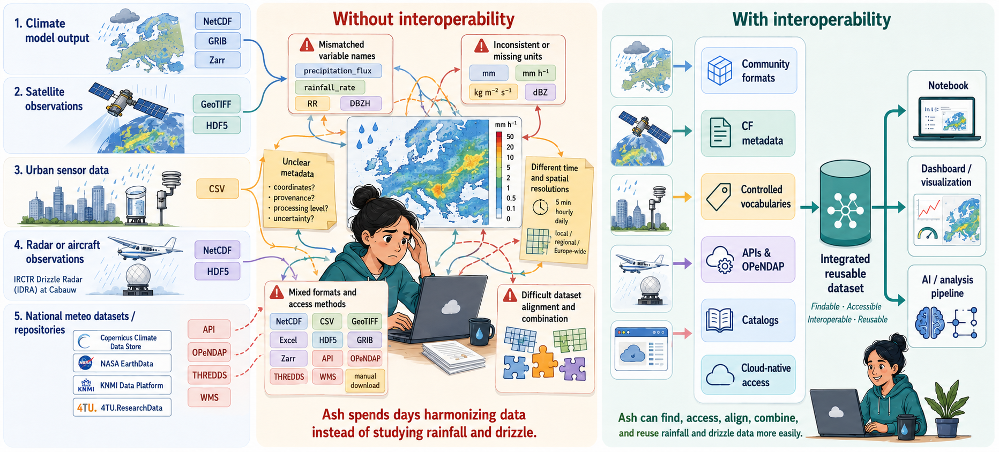
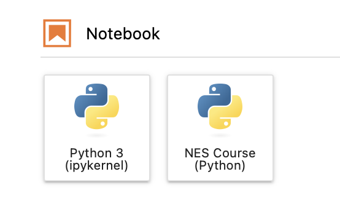

Summary and Setup
This lesson is about Interoperability in Climate and Atmospheric Sciences. The value of scientific data depends not only on its scientific content but on how easily it can be found, accessed, integrated, and reused by others, whether they are human researchers or automated computational workflows.
This course focuses on how to create first-class research outputs using the NetCDF format and publishing them through the 4TU.ResearchData repository. First class datasets means
easily found through rich, machine-actionable metadata,
reliably accessed using open standards and stable identifiers,
seamlessly integrated with other datasets and
semantically understood by humans and machines
The main message of this lesson is that datasets do not interoperate by themselves; systems interoperate through data that is structured, documented, standardized, and semantically well described. A technically available dataset may still be hard to reuse if its formats, metadata, identifiers, units, vocabularies, and schema are unclear or idiosyncratic. When these elements follow shared standards, the dataset becomes interoperable in the FAIR sense: it can be interpreted and reused across tools, repositories, notebooks, dashboards, cloud workflows, and AI pipelines with far less manual repair.
Target audience
This lesson is intended for researchers in the climate and atmospheric sciences who handle multidimensional NetCDF datasets and intend to make their data and software more reusable by others.
Ash’s challenge: combining climate data for rainfall and drizzle research
Ash is studying the spatial and temporal distribution of rainfall and drizzle in Europe. She wants to compare climate model output with satellite observations, urban sensor measurements, radar or aircraft observations, national meteorological datasets, and datasets deposited in research repositories.
At first, the data ecosystem looks rich. She can search across platforms such as Copernicus Climate Data Store, NASA EarthData, the KNMI Data Platform, and 4TU.ResearchData. Many datasets are open, downloadable, and described online. Some platforms provide climate model output, others provide satellite products, national weather observations, radar composites, or research datasets deposited by individual research groups.
At 4TU.ResearchData, Ash finds a dataset from the IRCTR Drizzle Radar (IDRA). IDRA is a high-resolution, polarimetric X-band radar developed by TU Delft and located at the Cabauw experimental site in the Netherlands. It is designed to observe low-reflectivity precipitation such as drizzle and light rain within a local observation radius. This makes it highly relevant for Ash’s research question, because drizzle is often difficult to capture consistently across different observation systems.
The problem is not simply finding data. The problem is making different datasets work together.
For rainfall and drizzle research, Ash may encounter precipitation data in many different forms. Some files are NetCDF, CSV, GeoTIFF, Excel, HDF5, GRIB, or Zarr. Some datasets can be accessed through APIs, OPeNDAP, THREDDS, WMS services, or cloud-native object storage, while others require manual download from a web interface.
Even when the data is available, it may not be immediately clear how
to combine it. One dataset may describe precipitation_flux,
another may use rainfall_rate, rain_intensity,
precipitation_amount, RR,
reflectivity, equivalent_reflectivity_factor,
or DBZH. These names do not always represent the same
physical quantity. Some describe rainfall accumulation over a time
interval, some describe instantaneous rainfall rate, and others describe
radar reflectivity, which is related to precipitation but is not the
same as rainfall amount.
Units may also differ or be missing. Rainfall can be expressed in
mm, mm h-1, kg m-2 s-1, or
accumulated over 5 minutes, 1 hour,
1 day, or a model time step. Radar variables
may use units such as dBZ, while coordinates may be stored
inside the file, described in a separate document, exposed through an
API response, or not documented clearly at all.
Spatial and temporal alignment adds another challenge. A satellite product may provide gridded observations over Europe. A climate model may provide daily or hourly output on a coarser grid. A national meteorological service may provide radar composites every 5 minutes. IDRA may provide local high-resolution radar measurements around Cabauw. Urban sensors may measure rainfall at specific locations. To compare these sources, Ash needs to understand not only the data values, but also their resolution, coordinate reference system, time coverage, processing level, uncertainty, provenance, and version.

To combine these datasets reliably, Ash needs to answer a sequence of questions:
Can I find the right datasets? Are they described in APIs(Application Programming Interfaces) in a way that supports search by time, location, variable, version, and data type?
Can I read the data structure? Are the files organized using community formats such as NetCDF, Zarr, GeoTIFF, or Parquet, with explicit dimensions, variables, coordinates, and attributes?
Can I understand what the variables mean? Do the datasets use shared metadata conventions, controlled vocabularies, standard names, units, coordinate systems, and provenance information?
Can I access the data programmatically? Can Ash use APIs, OPeNDAP , THREDDS, or other standard access mechanisms instead of downloading everything manually?
Can I work with the data at scale? Can she subset remote files, read only the variables and time periods she needs, or use cloud-native layouts such as Zarr or Kerchunk for repeated analysis?
Can I reproduce and automate the workflow? Are dataset versions, identifiers, metadata, and access routes stable enough for notebooks, dashboards, pipelines, or AI(Artifical Intelligence) workflows?
Learning objectives
By the end of this lesson, we aim to equip the learners with: A practical checklist for designing reusable climate and atmospheric datasets from the beginning: use community formats, apply semantic conventions, expose data through stable access mechanisms, and prepare data layouts that can support scalable analysis.
Specifically , learners will learn how to:
Assess climate and atmospheric datasets to identify structural, semantic, and technical interoperability barriers that prevent reliable reuse and combination across sources.
Analyze a NetCDF dataset to identify how its data model, dimensions, variables, coordinates, and attributes enable structural interoperability.
Evaluate whether a NetCDF dataset provides machine-actionable scientific meaning by examining its use of conventions, standard names, units, and coordinate metadata.
Use OPeNDAP with Python to access, inspect, subset, and visualize remote NetCDF data while distinguishing metadata retrieval from actual data transfer.
Use REST API requests to search, retrieve, create, and update repository metadata, explaining how programmatic access supports technical interoperability and reproducible RDM workflows.
Compare NetCDF, Zarr, and Kerchunk-based access patterns to determine how cloud-native layouts affect structural interoperability, scalability, and efficient reuse of large climate datasets.
Evaluate the AI-readiness of a climate data infrastructure by linking structural, semantic, and technical interoperability components to scalable, reproducible, and trustworthy machine-learning workflows.
References and Glossary
For further reading and definitions of key terms introduced in this workshop, consult the Reference section.
To follow this lesson, learners should already be able to have :
- Working knowledge in Python (write and execute short scripts in Python)
- Awareness of NetCDF format
Project Setup
Create a working directory for this course:
This folder will contain the course environment files, notebooks, scripts, and any downloaded data used during the exercises.
Software Setup
We will use JupyterLab for live coding and exercises.
This course requires:
-
uv, a Python package and project manager - Python 3.11 or newer
- A Unix-like terminal
- Several Python libraries, defined in
pyproject.toml
We use uv instead of manually creating a virtual
environment with venv and installing packages from
requirements.txt.
With uv, the main workflow is:
uv sync creates and updates the course
environment.uv run runs commands inside that environment.
You do not need to manually activate the virtual environment during
the course if you use uv run.
1. Install uv (Required)
Install uv using one of the options below.
Alternative installation methods
You can also install uv with package managers such as
Homebrew, Winget, Scoop, or pipx.
See the official installation instructions:
https://docs.astral.sh/uv/getting-started/installation/
2. Install or Check Python
This course was tested with Python 3.11.
uv can use an existing Python installation or install
Python for you.
To install Python 3.11 with uv, run:
Then verify that Python is available:
Expected output:
A newer Python 3 version may also work, but Python 3.11 is recommended for the course.
Python 2.7 is not supported.
Please use Python 3.11 or newer.
If you already have Python installed, uv may use your
existing Python version automatically.
3. Create the Course Environment File
Make sure you are inside the course folder:
Create a file named:
The pyproject.toml file defines the direct dependencies
of the course. Open the file in a text editor and add the following
content:
TOML
[project]
name = "interoperability-climate-sciences"
version = "0.1.0"
description = "Course environment for interoperability in climate and atmospheric sciences"
requires-python = ">=3.11"
dependencies = [
# Core scientific stack
"xarray",
"netCDF4",
"pydap",
"matplotlib",
"scipy",
"pandas",
# Cloud-native and remote data access
"zarr",
"kerchunk",
"fsspec[http]",
"h5netcdf",
"h5py",
# Metadata and conventions
"cf-xarray",
# API access
"requests",
# Interactive environment
"jupyterlab",
"ipykernel",
]Save the file.
- Generate the lockfile before the workshop with:
The uv.lock file records the resolved package versions
and improves reproducibility across learners’ machines.
4. Create and Synchronise the Environment
Run:
This command will:
- create a local
.venvfolder if it does not exist; - install all packages listed in
pyproject.toml; - create or update the
uv.lockfile.
The .venv folder is the virtual environment created by
uv.
Learners do not need to activate it manually if they use commands
starting with uv run.
5. Verify the Python Environment
Run:
BASH
uv run python -c "import xarray, netCDF4, pydap, zarr, kerchunk, fsspec, h5netcdf, h5py, scipy, pandas, requests, cf_xarray; print('All good')"Expected output:
If this command works, the course Python environment is ready.
6. Register the Environment in Jupyter
Register the course environment as a Jupyter kernel:
BASH
uv run python -m ipykernel install --user --name nes-course-env --display-name "NES Course (Python)"This makes the environment available inside JupyterLab as:
NES Course (Python)7. Launch JupyterLab
Launch JupyterLab with:
In JupyterLab, click on the button NES Course (Python) under Notebook.

8. Useful uv Commands During the Course
Run Python inside the course environment:
Run a Python script:
Run JupyterLab:
Install a new package and add it to pyproject.toml:
Synchronise the environment after pyproject.toml
changes:
Show the installed dependency tree:
9. Unix Terminal (Required for API Episodes)
You will need a Unix-like terminal for the API episodes.
macOS
Use the default Terminal app.
Terminal can be found under:
/Applications/UtilitiesYou can also search for “Terminal” through Spotlight.
Windows
Install one of:
- Git Bash: https://git-scm.com/downloads
- Windows Subsystem for Linux WSL: https://learn.microsoft.com/en-us/windows/wsl/install
For this course, Git Bash is usually enough.
WSL is more powerful, but it may require more setup time.
10. API Command-Line Tools (Required for REST API Episodes)
11. Optional Fallback: venv and
requirements.txt
Use this fallback only if uv cannot be installed on your
machine.
The recommended setup for this course is uv.
Use this section only if your institution blocks uv
installation or if you cannot get uv working before the
lesson.
Create a virtual environment:
Activate it.
12. Troubleshooting
uv: command not found
Close and reopen your terminal.
Then try:
If it still fails, reinstall uv or check whether the
installation folder was added to your PATH.
JupyterLab opens but the course kernel is missing
Run:
BASH
uv run python -m ipykernel install --user --name nes-course-env --display-name "NES Course (Python)"Then restart JupyterLab:
13. Final Setup Check
Before the workshop, make sure the following commands work:
BASH
uv --version
uv run python --version
uv sync
uv run python -c "import xarray, netCDF4, pydap, zarr, kerchunk, fsspec; print('All good')"
uv run jupyter lab
jq --versionIf all commands work, you are ready for the course.